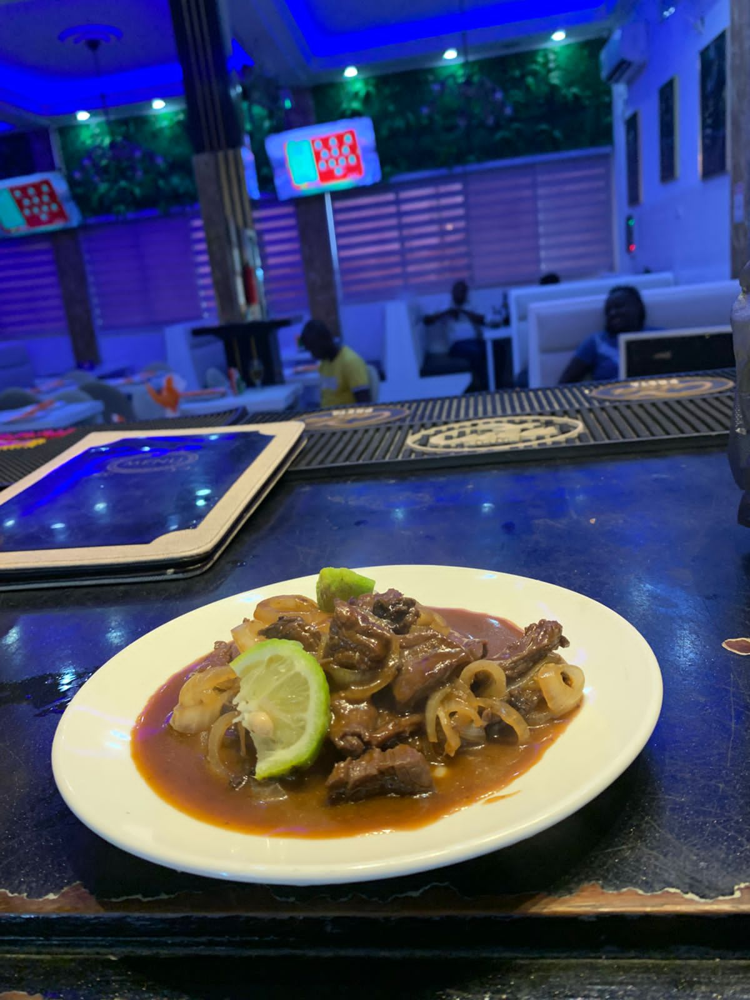
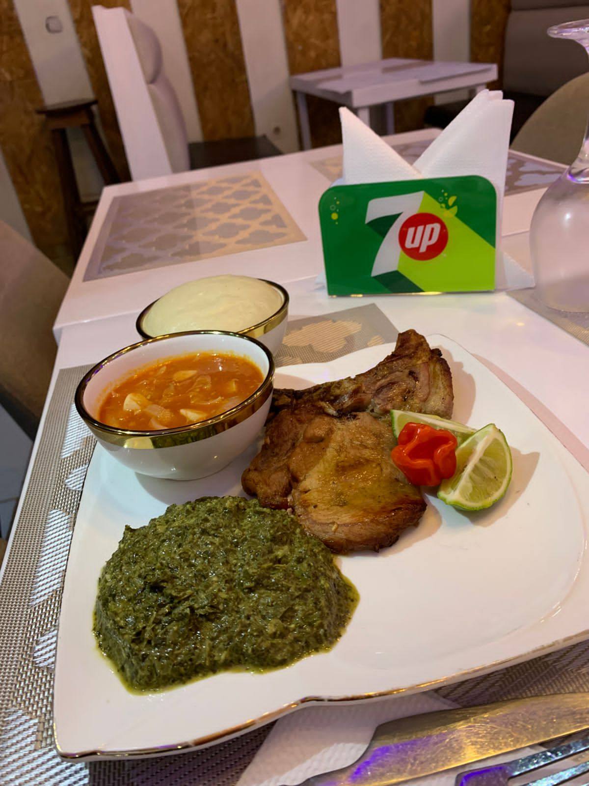
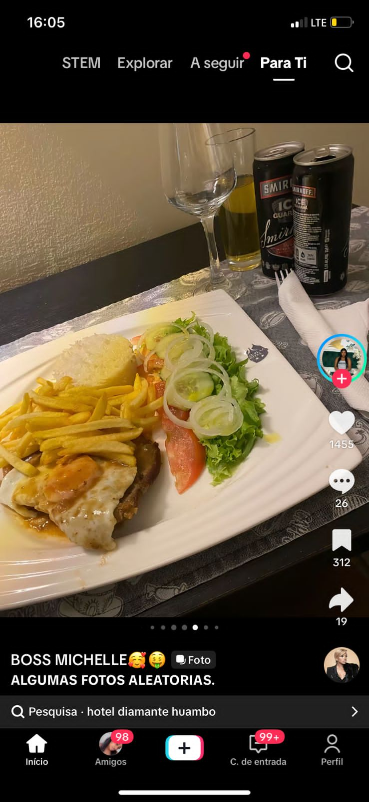

Onde a arte encontra o paladar em cada detalhe.

Cozida em molho cremoso de conhaque e gratinada com queijo Gruyère.

Corte nobre com redução de vinho do Porto e trufas negras.

Arroz arbóreo com açafrão iraniano e vieiras na manteiga.